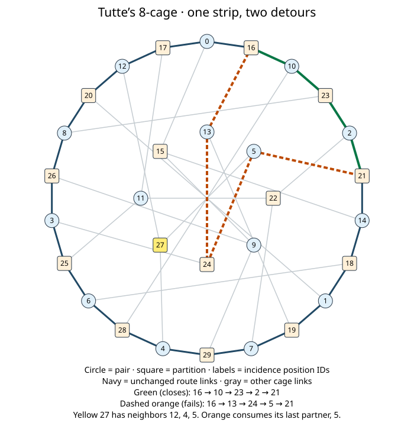

Drag to orbit; scroll or pinch to zoom. Switch the route without moving the graph. Spheres are pairs; boxes are partitions. The eight corners and twelve edge midpoints trace Coxeter’s cube. The extra incidence nodes are offset for visibility. Only cage links, not distances or crossings, encode incidence.

Navy: common route links. Yellow: guard 27. Green: 16–10–23–2–21. Orange: 16–13–24–5–21. Pale links remain part of the cage in every view.
Static diagram · Relation matrix